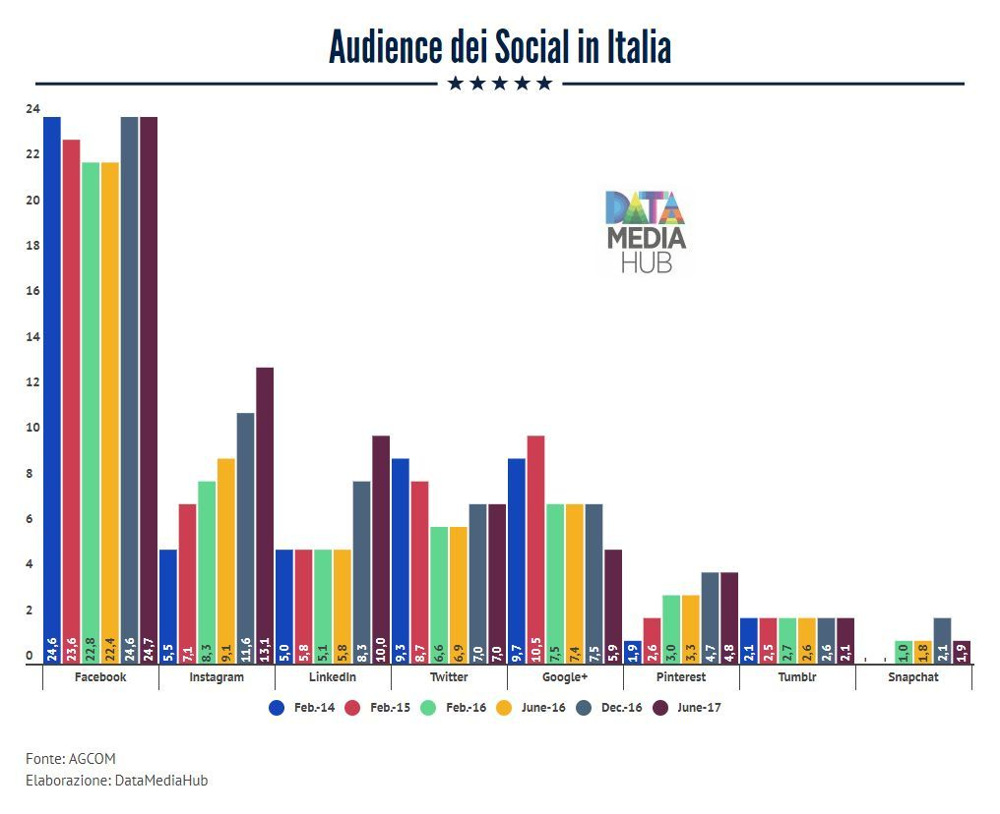
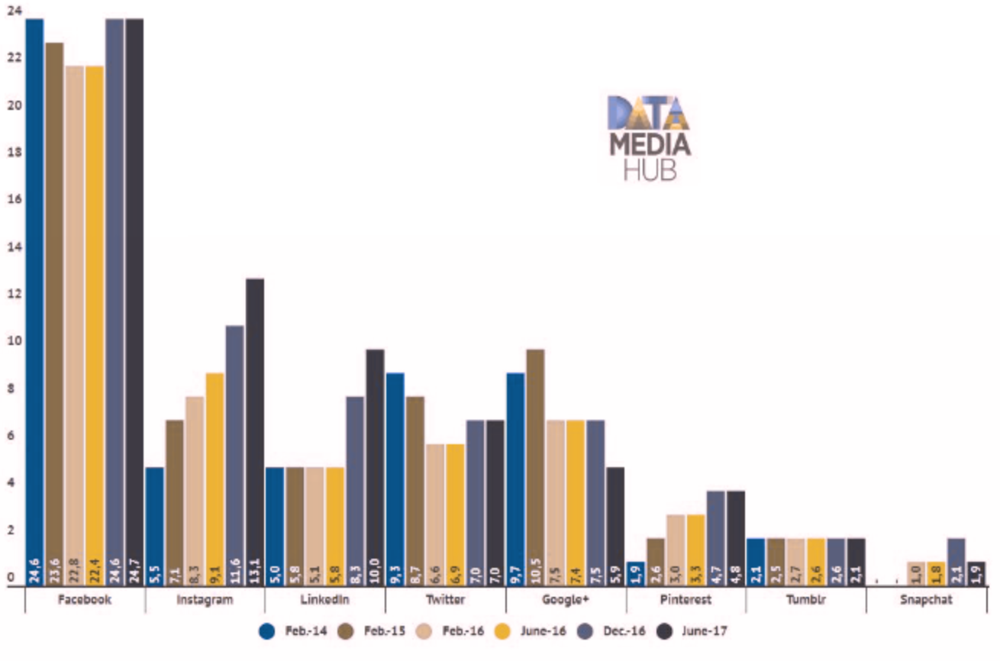

Si consideri il seguente grafico che riporta l'audience dei social media in Italia.
Il grafico compare in un post di Data Media Hub del 24 Ottobre 2017
 Nota: l'audience viene misurata in milioni di persone raggiunte da un determinato medium.Analisi
Analizzare il grafico sopra riportato secondo gli aspetti seguenti:Question:- è stata definita chiaramente o è evidente una domanda (o più di una) a cui la visualizzazione risponde?
La domanda è riportata in maniera incompleta: apparentemente dal titolo la domanda è "Qual'è l'audience dei diversi social media.". Di fatto esiste una seconda domanda che è: "Come si è evoluta l'audience dei diversi social media?"; questa seconda domanda appare guardando attentamente la legenda sotto il grafico che codifica, con diversi colori, sei date da Gennaio 2014 a Giugno 2017.
Data:- i dati mostrati sono validi e supportano la domanda?
I dati riportano la diffusione dei social media, si tratta di valori assoluti che possono essere confrontati direttamente. Tuttavia non esiste un totale di riferimento (ad es. il numero di persone che usano internet in generale) con cui confrontarli. L'unico confronto possibile sarebbe con la popolazione italiana, tuttavia sarebbe poco significativo.
Le rilevazioni sono state condotte in diversi anni ma in mesi diversi (Febbraio, Giugno, Dicembre). Non possiamo sapere se il momento della rilevazione ha qualche influenza sull'audience e quindi questa variabilità possa inficiare i confronti diretti.
Visual:le caratteristiche visuali sono usate appropriatamente?
Riguardo gli aspetti visuali si valuti l’integrità visuale secondo i tre aspetti:
Proportionality:- le misure sono riportate in maniera uniformemente proporzionale?
La lunghezza della barre a prima vista sembre proporzionale, tuttavia si notano due problemi principali:
- La lunghezza delle barre appare approssimata; ad esempio i le prime quattro barre relativ a Linkedin pur corrispondendo a valori variabili da 5,0 a 5,8 hanno tutte uguale lunghezza.
- I numeri riportati sull'asse verticale non paiono accuratamente allineati ai reppresentati dalle barre; ad esempio l'estremo superiore della prima barra di facebook, corrispondente al valore di 24,6, è chiaramente al di sotto del numero 24 sull'asse.
Si nota il fatto positivo che l'asse verticale è correttamente con base a zero.
Utility:- tutti gli elementi presenti nel grafico trasmettono informazioni utili?
Tutti gli elementi del grafico sono utili. Gli unici elementi decorativi che potrebbero essere omessi sono il il logo e la decorazione (le 5 stelle).
Clarity:- i dati del grafico sono chiaramente identificabili e comprensibili (opportunamente descritti)?
Sono presenti diversi problemi di chiarezza:
- i gruppi di barre relative ai diverse social media sono ammucchiati e non sono di facile discernimento;
- la corrispondenza tra il colore delle barre e la data della rilevazione è codificata nella legenda: questo richiede un movimento alternato dello sguarda tra la legenda e le barre;
- l'andamento nel tempo è di difficile lettura in quanto le barre tendono a concentrare l'attenzione sui singoli valori piuttosto che sull'andamento;
- l'asse verticale non riporta le tacche corrispondenti ai valori; questa mancanza, unita ai problemi di proporzionalità menzionati sopra, rende la lettura difficoltosa;
- l'assenza di una griglia orizzontale, in presenza di tantissime barre rende difficile la lettura dei valori;
- i valori codificati dalle barre sono riportati alla base mentre la lettura della lunghezza della barra porta ad osservare l'estremo superiore; questo renda la lettura dei valori faticosa in quanto richiede un movimento alternativo dello sguardo.
Nonostante l'affiancamento di barre con i colori rosso e verde, non ci sono problemi per chi soffre di cecità ai colori grazie alla significativa differenza in luminosità, come si può osservare con la simulazione delle visione per persone affette da Deuteranopia (la forma più comune)

Design
Riprogettare la visualizzazione in modo da risolvere i problemi evidenziati nell'analisi.
Uso delle linee per evidenziare l'andamento
Lo stesso grafico può essere reso più leggibile utilizzando un direct labeling invece della legenda:
Un'altra possibile visualizzazione si focaliza sulla variazione invece che sui valori assoluti.
Vista la diversa ampiezza degli intervalli tra le variazioni si è deciso di riportare la variazione media giornaliera invece della variazione totale nell'intervallo in quanto quest'ultimo valore non sarebbe confrontabile. Ad esempio nel periodo da Giugno a Dicembre 2016 c'è stato un aumento medio di utenti per Instagram e Linkedin di circa 14mila nuovi utenti al giorno.
È possibile fare il focus su un medium facendo un doppio click sulla corrispondente legenda.
Inserire le risposte all'interno del presente file,
in particolare negli elementi <div>
che hanno come classe answer.